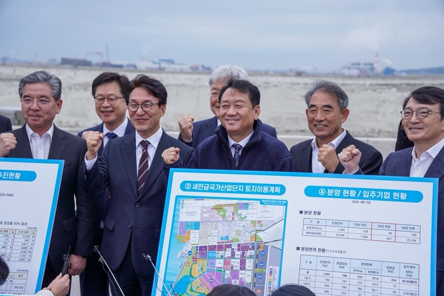

69호 | 2026년 10월 30일 발행
📌 이번 호 주요 목차
 우리동네 국회의원 이광재
우리동네 국회의원 이광재
📝 현장일지
이광재의원, 메가성장특위 첫 현장방문으로 새만금 찾아 "현대차 투자는 속도전"
• 메가성장특위 첫 현장방문으로 현대차 투자가 예정된 전북 새만금 방문
• 로봇·자율주행차·데이터센터·에너지 생산이 한곳에 모이는 유일한 지역으로 성장 기대
• 교육·보육·교통·의료·문화 인프라가 집약된 새로운 도시 탄생 필요성 강조
• 전북대·군산대·인근 실업계고와 계약학과를 맺어 일자리 만들면 '제2의 울산' 가능
• 투자 지원 근거가 될 특구법 준비, 예산 지원 아끼지 않겠다고 약속
• 로봇·자율주행차·데이터센터·에너지 생산이 한곳에 모이는 유일한 지역으로 성장 기대
• 교육·보육·교통·의료·문화 인프라가 집약된 새로운 도시 탄생 필요성 강조
• 전북대·군산대·인근 실업계고와 계약학과를 맺어 일자리 만들면 '제2의 울산' 가능
• 투자 지원 근거가 될 특구법 준비, 예산 지원 아끼지 않겠다고 약속

📌 출처: 이광재 공식 네이버 블로그
📰 언론보도
[인천일보] 이광재의원 "GDP 아닌 '국민의 삶'을 국가 목표로… 예산으로 삶을 바꿔야"
국회 예결위원장인 이광재 의원이 29일 인천일보 인터뷰에서 "국가는 세계 10위 부자인데 국민의 삶의 질은 32위"라며 예산 편성 기준을 국민의 삶 중심으로 바꿔야 한다고 강조했습니다. 일자리·소득·주택·교육·의료 등 8개 항목으로 전국 226개 기초자치단체의 삶의 질을 비교·공개하고 이를 예산 배분과 연결하자는 구상입니다. 국세와 지방세 비율을 7대3으로 조정해 지방 재정 자율성을 높여야 한다고 밝혔고, "정쟁을 넘어 국민의 삶을 바꾸는 대안을 예산으로 보여줘야 한다"고 말했습니다.
📌 출처: 인천일보 (이주영·라다솜 기자)
📰 언론보도
[국민일보] 이광재의원 "초광역특구법으로 규제 빨리 풀고, AI 결합 플랫폼 만들어야"
이광재 국회 예결위원장 겸 민주당 메가성장특위 수석부위원장이 29일 '2026 국민미래포럼'에서 '혁신과 신성장: 3대 메가 프로젝트 성공의 길'을 주제로 기조강연을 했습니다. 이 의원은 제조업·교육·의료·문화에 인공지능(AI)을 결합한 플랫폼을 조성해야 한다며, "강원지사를 해보니 인허가와 환경영향평가를 하다 보면 5년이 그냥 간다"고 신속한 규제 완화를 위한 '초광역특구법'의 필요성을 강조했습니다. 33만 개 EBS 교육 콘텐츠와 의료 데이터를 AI와 결합하자는 제안도 내놨습니다.
📌 출처: 국민일보 (한웅희 기자)
📰 하남 지역 주요 뉴스
🏘️ 주택/개발
정부, 미사섬·감일에 1.85만호 신규택지… '하남미사K-컬처' 1.2만호·'하남감일2' 6.5천호
국토교통부가 29일 주택신속공급방안(8.13대책) 후속조치로 수도권 신규택지 6곳 7.67만호를 발표하면서 하남시에 1.85만호가 포함됐습니다. 미사동 131만㎡ '하남미사K-컬처'에 1.2만호, 감일동 71만㎡ '하남감일2'에 6.5천호가 들어섭니다. 정부는 미사K-컬처에 K-컬처 복합단지를 함께 조성해 수도권 동부권의 자연·문화 거점으로 만들 계획입니다. 하남시는 입장문에서 서하남IC 개선, 지하철 3호선 등 교통인프라 입주 전 완비, 위례신사선 감일 연장 반영 등을 강력히 요구하겠다고 밝혔습니다.
📌 출처: 시티뉴스 (고승선 기자)
👵 복지/평생학습
미사노인복지관 '미노 배움 한마당' 전액 무료 운영… 신규 24개 강좌, 접수 첫날 300여 명 몰려
하남시미사노인복지관(관장 김교심)이 하남시 지원으로 개관 이래 최대 규모의 전액 무료 평생학습 프로그램 '미노 배움 한마당'을 운영합니다. 11월까지 예정됐던 3학기 강좌 중 56개를 12월까지 연장하고, 취미·여가 신규 강좌 24개를 새로 열었습니다. 노후 설계·건강관리·인지건강을 다루는 특강 '미노 아카데미'도 진행합니다. 27일 방문 접수 첫날 어르신 300여 명이 몰렸으며, 복지관 2층 제2사무실에서 1인 최대 3과목까지 신청할 수 있습니다. 문의는 문화복지팀(031-794-9368)입니다.
📌 출처: 하남경제신문
💬 하남 맘카페 HOT 이슈
이번 주 하남 지역 맘카페(미사맘스클럽, 정다운 감일맘, 하남맘 모여라, 교산라이프 등)에서 많이 오르내린 HOT 이슈 TOP 3입니다.
1️⃣ [신규택지] "미사섬에 1.2만호?"… 미사섬·감일2 신규택지 발표에 카페 '술렁'
현황: 29일 정부가 미사섬과 감일동 일대를 신규 공공택지로 발표하자 하루 사이 관련 글이 쏟아졌습니다. 미사맘스클럽에는 "오늘 신규택지 발표 보고 마음이 복잡해졌다"며 한강 뚝방길과 조정경기장 주변 자연을 그대로 두었으면 좋겠다는 글, 기사를 보고 놀랐다며 교통난과 임대주택 비율을 걱정하는 글이 올라왔습니다. "공연장을 짓는다더니 왜 주택사업이냐"며 K-스타월드 계획이 어떻게 되는지 묻는 글도 눈길을 끌었습니다. 감일 카페에는 "감일동도 있네요"라며 감일2 지구 기사가 공유됐고, 교산 카페에서는 기존 감일지구와 통합생활권으로 조성된다는 국토부 발표 내용이 정리돼 퍼졌습니다.
💡 주민 포인트: 미사동 131만㎡ '하남미사K-컬처'에 1.2만호, 감일동 71만㎡ '하남감일2'에 6.5천호가 계획됐습니다. 정부는 미사K-컬처에 K-컬처 복합단지를 함께 조성하겠다고 밝혔고, 하남시는 서하남IC 개선·지하철 3호선 등 교통인프라를 입주 전에 갖춰 달라고 요구하겠다는 입장입니다. 앞으로 지구지정 과정의 주민 의견 청취(공람) 공고를 눈여겨보세요.
💬 주민 반응: 집이 늘어나는 만큼 교통·학교 대책이 먼저 나와야 한다는 목소리와, 미사섬의 자연과 K-컬처 계획이 어떻게 지켜질지 궁금하다는 반응이 많았습니다.
📌 출처: 네이버 카페 (미사강변도시 미사맘스클럽, 좋은예감 일등도시 감일스윗시티, 교산신도시 부동산정보)
2️⃣ [아이 안전] "중학생들이 초등학생 돈을 뺏는대요"… 학교 안내문에 미사 학부모들 걱정
현황: 미사맘스클럽에 초등학교에서 받은 안내문을 공유하며, 중학생 5~8명이 미사 일대 학생들에게 위협적인 행동을 하며 금품을 빼앗고 있다는 내용이 담겼다는 글이 올라왔습니다. 글쓴이는 경찰도 움직이는 것으로 안다며 "학부모들이 할 수 있는 일이 무엇이 있을까"라고 물었습니다. 앞서 1주 전에도 아이가 학교에서 들었다며 한 무리가 초등 6학년에게 '가입하라'고 협박하고 다닌다는 글이 올라와 걱정을 키웠습니다. 댓글에는 아이에게 혼자 다니지 말고 피해를 보면 바로 알리라고 이야기했다는 경험담이 이어졌습니다.
💡 주민 포인트: 아이가 돈이나 물건을 빼앗기거나 위협을 받았다면 혼내기보다 먼저 이야기를 들어 주고, 학교(담임·학교폭력 담당)와 경찰에 알리세요. 학교폭력 신고·상담은 국번 없이 117(문자 #0117), 위급한 상황은 112로 신고할 수 있습니다.
💬 주민 반응: "살기 좋은 동네에서 이런 일이 생겨 놀랐다"며, 아이들 하굣길과 학원 이동 시간에 더 신경 쓰겠다는 반응이 많았습니다.
📌 출처: 네이버 카페 (미사강변도시 미사맘스클럽)
3️⃣ [겨울 간식] "붕어빵 파는 곳 있나요?"… 쌀쌀해진 날씨에 붕어빵·호떡·방어 맛집 찾기
현황: 아침저녁으로 쌀쌀해지자 겨울 간식을 찾는 글이 늘었습니다. 미사맘스클럽에는 "지금 붕어빵 파는 곳 있나요?", "미사에도 호떡 가게가 있을까요?" 같은 질문과 함께, 방어철을 맞아 온누리상품권을 쓸 수 있는 하남수산물시장 가게를 추천해 달라는 글이 올라왔습니다. 경정공원에서 운동하고 카페 추천 글을 보고 베이글 가게에 다녀왔다는 후기, 미사역에 꼬마김밥 가게가 새로 생겼다는 소식도 공유됐습니다. 정다운 감일맘에는 현대그린마트 앞에 순대트럭이 왔다는 실시간 제보와 일요일마다 오던 순대차를 찾는 글이 이어졌습니다.
💡 주민 포인트: 전통시장 점포에서는 온누리상품권, 하남시 가맹점에서는 지역화폐 '하머니'를 쓸 수 있는지 미리 확인하면 장보기 비용을 아낄 수 있습니다. 노점·푸드트럭은 요일과 시간이 자주 바뀌니 동네 카페 실시간 제보를 참고하세요.
💬 주민 반응: "붕어빵 철이 왔다"며 반가워하는 댓글과 함께, 동네 단골 가게를 서로 알려 주는 댓글이 줄을 이었습니다.
📌 출처: 네이버 카페 (미사강변도시 미사맘스클럽, 정다운 감일맘)
🎭 ALL IN 하남라이프
2026년 10월 30일 기준 한눈에 보는 하남시 최신 문화·행사·교육 안내 가이드
🎶 11.4(수) ~ 12.1(화) | 하남문화예술회관 · 공연 5편
[공연] 11월 하남문화예술회관 공연 5선 — 인형극 '배고파'부터 손열음 송년음악회까지
"아이와 함께, 부부끼리, 가족 모두 — 골라 보는 11월 공연"
하남문화예술회관이 11월 인형극·클래식·뮤지컬·콘서트까지 다섯 편의 공연을 준비했습니다.
🦊 찾아가는 수레극장 '배고파': 11.4(수)~11.6(금) 오전 10:10·11:30, 소극장 · 전석 1만 원 (배고픈 여우와 아기 새 인형극)
🎨 미술관으로 간 클래식: 11.12(목) 오전 11시, 소극장 · 전석 1만 5천 원 · 초등학생 이상 · 70분
🧺 뮤지컬 '빨래': 11.13(금)~11.15(일), 대극장(검단홀) · 예매 NOL티켓·티켓링크
🎤 가수 김사월 '미드위크 아츠 나이트': 11.25(수) 오후 8시, 대극장 · 문화가 있는 날 특별가 1만 원
🎻 손열음 고잉홈프로젝트 송년음악회: 12.1(화) 오후 8시 30분, 대극장 · 예매 하남문화재단
☎️ 문의: 하남문화재단 031-790-7979
하남문화예술회관이 11월 인형극·클래식·뮤지컬·콘서트까지 다섯 편의 공연을 준비했습니다.
🦊 찾아가는 수레극장 '배고파': 11.4(수)~11.6(금) 오전 10:10·11:30, 소극장 · 전석 1만 원 (배고픈 여우와 아기 새 인형극)
🎨 미술관으로 간 클래식: 11.12(목) 오전 11시, 소극장 · 전석 1만 5천 원 · 초등학생 이상 · 70분
🧺 뮤지컬 '빨래': 11.13(금)~11.15(일), 대극장(검단홀) · 예매 NOL티켓·티켓링크
🎤 가수 김사월 '미드위크 아츠 나이트': 11.25(수) 오후 8시, 대극장 · 문화가 있는 날 특별가 1만 원
🎻 손열음 고잉홈프로젝트 송년음악회: 12.1(화) 오후 8시 30분, 대극장 · 예매 하남문화재단
☎️ 문의: 하남문화재단 031-790-7979
📌 출처: 하남시 공식 블로그 · 하남문화재단
🏛️ 공공기관 소식지
2026년 10월 30일 기준 하남시 공공기관 주요 공고·신청 안내입니다.
🏃 하남시보건소 | 미사보건센터 비만건강클리닉 · 연중 · 무료
체성분 검사·체력 측정 무료로 — 미사보건센터 '비만건강클리닉' 맞춤 건강상담 안내
"내 몸 상태, 숫자로 확인하고 상담받으세요"
미사보건센터 비만건강클리닉에서 체성분 검사와 체력 측정을 해 주고, 결과에 맞춘 건강상담을 무료로 제공합니다.
👥 대상: 하남시민 (신분증 지참) · 체력 측정은 운동에 무리가 없는 성인
📍 장소: 미사보건센터 1층 비만건강클리닉
🩺 검사: 혈압·맥박, 체성분 검사 / 체력 측정 (40분~1시간, 운동복·운동화 준비)
🕘 운영: 평일 오전 9시 ~ 오후 5시 30분 (점심 12~13시, 오전 접수 11시 30분 마감)
⚠️ 유의: 검사 2~3시간 전부터 음식·물 섭취와 과도한 운동은 피해 주세요 · 재측정은 3개월 뒤 가능
🏋️ 함께 운영: 신체활동 증진·비만예방 운동교실, 스마트밴드 모바일 헬스케어(19~64세), 액티브슬링 운동교실(40~60대) — 모집 기간 별도 공지
✅ 예약: 사전 예약제 (전화·방문) 031-790-6436
미사보건센터 비만건강클리닉에서 체성분 검사와 체력 측정을 해 주고, 결과에 맞춘 건강상담을 무료로 제공합니다.
👥 대상: 하남시민 (신분증 지참) · 체력 측정은 운동에 무리가 없는 성인
📍 장소: 미사보건센터 1층 비만건강클리닉
🩺 검사: 혈압·맥박, 체성분 검사 / 체력 측정 (40분~1시간, 운동복·운동화 준비)
🕘 운영: 평일 오전 9시 ~ 오후 5시 30분 (점심 12~13시, 오전 접수 11시 30분 마감)
⚠️ 유의: 검사 2~3시간 전부터 음식·물 섭취와 과도한 운동은 피해 주세요 · 재측정은 3개월 뒤 가능
🏋️ 함께 운영: 신체활동 증진·비만예방 운동교실, 스마트밴드 모바일 헬스케어(19~64세), 액티브슬링 운동교실(40~60대) — 모집 기간 별도 공지
✅ 예약: 사전 예약제 (전화·방문) 031-790-6436
📌 출처: 하남시보건소 (건강증진과)
하남시 청년일자리과 | 온라인 10.30(금) 오늘 마감 · 방문 11.13(금)까지
11~18세 여성청소년 생리용품 연 최대 14만 2천 원 지원 — 2차 신청 접수 중
"아직 신청 안 하셨다면 서둘러 주세요"
2026년 경기도 여성청소년 생리용품 보편지원사업 2차 신청을 받습니다. 예산이 소진되면 선착순으로 일찍 마감될 수 있습니다.
👧 대상: 신청일 현재 하남시에 주민등록(외국인등록·국내거소신고)된 11~18세 여성청소년 (2008.1.1.~2015.12.31. 출생) · 상반기 선정자는 신청 불필요
🗓 온라인: 경기민원24 (gg24.gg.go.kr) · 10월 30일(금)까지
🏢 방문: 관할 행정복지센터 · 11월 13일(금)까지
💳 지원: 월 11,800원, 연 최대 142,000원을 하남시 지역화폐 '하머니'로 한 번에 지급 (11월 11일부터 순차 지급)
☎️ 문의: 하남시 청년일자리과 031-5182-1581
2026년 경기도 여성청소년 생리용품 보편지원사업 2차 신청을 받습니다. 예산이 소진되면 선착순으로 일찍 마감될 수 있습니다.
👧 대상: 신청일 현재 하남시에 주민등록(외국인등록·국내거소신고)된 11~18세 여성청소년 (2008.1.1.~2015.12.31. 출생) · 상반기 선정자는 신청 불필요
🗓 온라인: 경기민원24 (gg24.gg.go.kr) · 10월 30일(금)까지
🏢 방문: 관할 행정복지센터 · 11월 13일(금)까지
💳 지원: 월 11,800원, 연 최대 142,000원을 하남시 지역화폐 '하머니'로 한 번에 지급 (11월 11일부터 순차 지급)
☎️ 문의: 하남시 청년일자리과 031-5182-1581
📌 출처: 하남시 (청년일자리과)
© 2026 우리동네 진짜일꾼 이광재